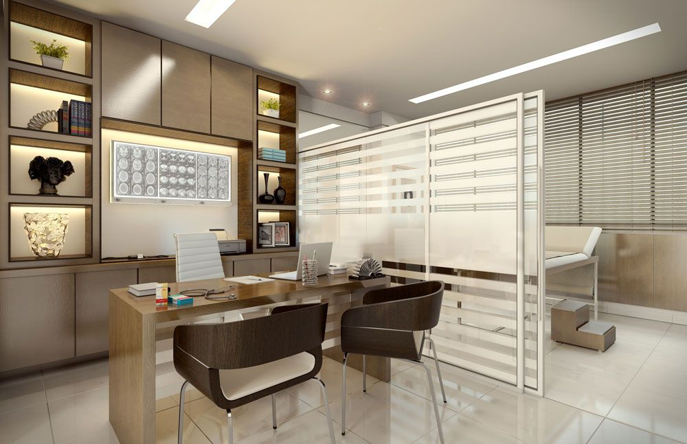

Saúde mental é liberdade.
Atendimento humanizado focado em restaurar seu equilíbrio emocional através de ciência e empatia.
"O cuidado começa pela escuta atenta e sem julgamentos."
CRM/MG 87398

Por que escolher o Dr. Denner Cerqueira?
Uma abordagem que une a excelência clínica acadêmica com a sensibilidade necessária para tratar as feridas invisíveis da alma.
Diagnóstico Preciso
Avaliação detalhada utilizando os critérios mais modernos da medicina baseada em evidências.
Tratamento Individual
Protocolos personalizados que respeitam a sua história, seus valores e seu ritmo biológico.
Ética e Sigilo
Ambiente seguro e confidencialidade absoluta em todas as etapas do seu acompanhamento.
Especialidades Atendidas
Áreas de expertise focadas no seu bem-estar integral.
Transtornos de Ansiedade
Tratamento especializado para fobia social, síndrome do pânico e ansiedade generalizada.
Depressão
Protocolos modernos para depressão maior e persistente.
Burnout & Estresse Profissional
TDAH em Adultos
track_changesGaleria
Conheça nosso espaço e ambiente acolhedor.
Para quem busca mais do que apenas medicação.
-
check_circle
Pessoas que buscam um acolhimento empático e sem pressa.
-
check_circle
Quem deseja entender a causa de seus sintomas, não apenas silenciá-los.
-
check_circle
Pacientes que valorizam a integração entre psiquiatria e qualidade de vida.
Estrutura pensada em você
Um ambiente acolhedor, discreto e de fácil acesso.

Onde estamos
Ouro Branco - MG
Mapa disponível em breve
Mapa Interativo
Ouro Branco, MG
Dúvidas frequentes
Aceita convênios médicos?
Qual a duração da primeira consulta?
É possível realizar atendimento online?
Pronto para começar sua jornada?
Dê o primeiro passo em direção a uma vida com mais propósito e equilíbrio.
Fale pelo Instagram